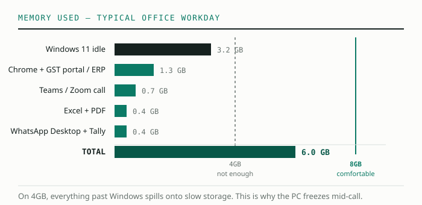
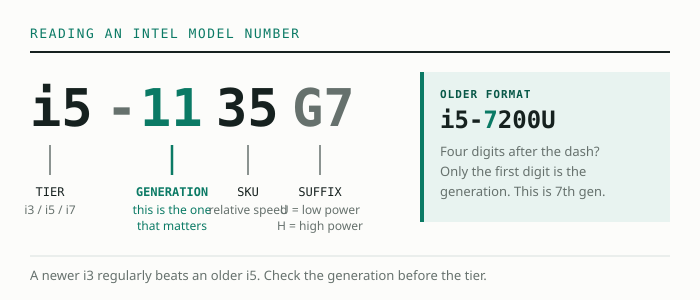

The two most misunderstood numbers on a laptop spec sheet are RAM and processor. Sellers exploit this confusion daily — I've heard salesmen tell students that "i5 is always better than i3" and "4GB is enough for study" in the same breath. Both statements are wrong often enough to cost you money.
RAM: why 8GB is the real minimum
RAM is your laptop's working table. A bigger table means more books open at once without shuffling. Here is what a typical study session actually loads into RAM in 2026:

On a 4GB machine, Windows alone nearly fills the table. Everything else gets pushed to the slow "swap" area on storage, and the laptop starts freezing mid-test. On 8GB, the same session runs smoothly with room to spare. 16GB is a luxury for a student — nice, not necessary. Spend that difference on a better SSD or screen.
One practical tip: check if the RAM is "soldered" or has a free slot. Many budget laptops let you add another 8GB stick later for ₹1,500–2,000. That upgradeability is worth more than a fancy body.
Processors: the generation is the real spec
Intel names its chips i3, i5, i7 — but these are tiers within one generation, not absolute rankings across time. Technology moves fast enough that a newer i3 regularly beats an older i5.
Reading the model number is easy once you know the trick. Take i5-1135G7: the first two digits after the dash (11) are the generation. Take i3-1215U: generation 12. Older four-digit models like i5-7200U are generation 7 (first digit only).

For AMD, the logic is similar: Ryzen 3/5/7 are tiers, and the first digit of the model number (Ryzen 5 5500U = 5000 series) tells you the family. Ryzen 5000 series and newer are all comfortable for student workloads and often cheaper than the equivalent Intel.
So what should a student actually buy?

- Pure exam prep (mocks, PDFs, video classes): i3 11th gen / Ryzen 3 5300U or newer, 8GB RAM. Anything more is unused capacity.
- Prep + light extras (Excel practice, typing tests, coding basics): same as above — these are light workloads too.
- Prep + video editing or heavy coding: now you genuinely benefit from an i5/Ryzen 5 and 16GB. This is the only student case where paying more makes sense.
The pattern to notice: sellers upsell processors because the margin is better, but for a student the SSD and RAM shape daily experience far more. Get the generation right, get 8GB, and put your remaining budget into a Full HD screen your eyes will thank you for.